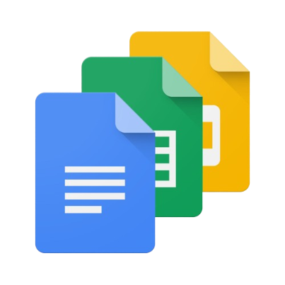

For more information, click on this image

GRE
GRE (Graduate Record Examination) is a standardized test used for admissions into graduate and business programs worldwide, primarily in the United States. The GRE exam measures your verbal reasoning, quantitative reasoning, and analytical writing skills. Here are some key details about the GRE exam:
- Sections:
- Analytical Writing: This section includes two tasks: Analyze an Issue and Analyze an Argument. You will need to write essays for both tasks.
- Verbal Reasoning: This section assesses your reading comprehension, text completion, and sentence equivalence skills.
- Quantitative Reasoning: This section evaluates your mathematical skills, including arithmetic, algebra, geometry, and data analysis.
- Scoring: The GRE General Test is scored on a scale of 130 to 170 for both the Verbal and Quantitative sections, in one-point increments. The Analytical Writing section is scored on a scale of 0 to 6, in half-point increments.
- Test Format: The GRE General Test is administered via computer at designated test centers. It is also available in a paper-based format in areas where computer-based testing is not available.
- Test Duration: The total testing time for the computer-based GRE General Test is around 3 hours and 45 minutes, including one 10-minute break between sections. The paper-based test may have a different format and duration.
- Test Dates: GRE General Test dates are typically available year-round, and you can choose a date that suits your schedule. However, it's advisable to register early as popular test dates may fill up quickly.
- Registration: You can register for the GRE online through the official GRE website. You'll need to create an ETS (Educational Testing Service) account to complete your registration.
- Fees: The registration fee for the GRE General Test varies by country, but it's generally around $205 as of my last knowledge update. Additional fees may apply for services like score reporting and rescheduling.
- Preparation: Many test-takers prepare for the GRE by using study guides, practice tests, and online resources. There are also GRE prep courses and tutoring options available.
- Score Reporting: You can choose up to four graduate or business programs to send your GRE scores to for free when you register for the test. You can also send scores to additional programs for a fee.
- Validity: GRE scores are typically valid for up to five years.
It's essential to check the official GRE website or contact ETS for the most up-to-date information regarding test dates, fees, and registration procedures, as these details may change over time. Additionally, individual graduate and business programs may have specific score requirements, so be sure to research the requirements of the programs you plan to apply to.
IELTS
The IELTS (International English Language Testing System) exam is a standardized test that assesses your proficiency in the English language. It is widely accepted for educational and immigration purposes in countries where English is the primary language. Here are some key details about the IELTS exam:
-
Types of IELTS Exams:
- IELTS Academic: This version is typically required for admission to universities and other educational institutions. It assesses your ability to use academic English in an educational context.
- IELTS General Training: This version is usually required for immigration purposes, such as visa applications for work or permanent residency. It evaluates your general English language skills in everyday contexts.
-
Test Components:
- Listening: You'll listen to recordings of conversations and monologues and answer questions based on what you hear.
- Reading: You'll read a variety of texts and answer questions to test your comprehension and understanding.
- Writing: You'll complete two writing tasks. In the Academic version, you'll summarize and analyze information from a graph, chart, table, or diagram in Task 1 and write an essay in Task 2. In the General Training version, you'll write a letter in Task 1 and an essay in Task 2.
- Speaking: This is a face-to-face interview with an examiner. It assesses your ability to express yourself in spoken English.
- Scoring: The IELTS scores for each section (Listening, Reading, Writing, and Speaking) are reported on a scale of 0 to 9. Your overall band score is the average of these individual scores, rounded to the nearest half or whole band.
- Test Duration: The total test time for both IELTS Academic and IELTS General Training is 2 hours and 45 minutes.
- Test Dates: IELTS exams are typically available throughout the year. You can find test dates and locations on the official IELTS website.
- Registration: You can register for the IELTS exam online through the official IELTS website or in person at an authorized test center.
- Test Fees: The cost of the IELTS exam varies by country and location. It's advisable to check the official IELTS website for the most up-to-date fee information.
- Score Reporting: You will receive a Test Report Form (TRF) with your scores approximately 13 days after the test date. You can also request additional TRFs to be sent to institutions or organizations of your choice.
- Validity: IELTS scores are typically valid for up to two years from the date of the test.
- Preparation: Many test-takers prepare for the IELTS exam by using official IELTS practice materials, taking preparatory courses, and practicing sample tests.
It's important to confirm the specific requirements of the institution or organization you are applying to, as they may have minimum score requirements and may prefer one version of the IELTS over the other (Academic or General Training). Additionally, individual test centers may have different test dates and availability, so it's a good idea to plan your registration well in advance.
TOEFL
The TOEFL (Test of English as a Foreign Language) is a standardized test that assesses your proficiency in the English language, primarily for academic purposes. It is widely accepted by universities, colleges, and institutions around the world as proof of your English language skills. Here are some key details about the TOEFL exam:
- Test Sections:
- Reading: You'll read passages and answer questions to test your understanding of written English.
- Listening: You'll listen to lectures, discussions, and conversations, and then answer questions based on what you hear.
- Speaking: You'll complete six tasks that assess your ability to speak in English on various topics.
- Writing: You'll write two essays – one integrated essay that combines reading and listening skills, and one independent essay where you express your opinion on a topic.
-
Test Versions:
- TOEFL iBT (Internet-Based Test): This is the most common format, where the test is administered via computer. It is available at test centers worldwide.
- TOEFL PBT (Paper-Based Test): This format is less common and primarily available in areas where internet-based testing is not accessible.
- Scoring: Each of the four sections (Reading, Listening, Speaking, and Writing) is scored on a scale of 0 to 30, resulting in a maximum total score of 120. Your scores are typically available online approximately 6 days after the test date.
- Test Duration: The TOEFL iBT test takes around 4 hours to complete, including check-in time.
- Test Dates: TOEFL iBT test dates are offered year-round, and you can find available dates and locations on the official ETS (Educational Testing Service) website.
- Registration: You can register for the TOEFL test online through the official ETS website or by phone.
- Test Fees: The cost of the TOEFL exam varies by country and location. It's advisable to check the official ETS website for the most up-to-date fee information.
-
Score Reporting:
- You can choose up to four recipients to receive your TOEFL scores for free when you register for the test. Additional score reports can be ordered for a fee.
- TOEFL scores are typically available online 6 days after the test date.
- Validity: TOEFL scores are generally valid for up to two years from the test date.
- Preparation: Many test-takers prepare for the TOEFL by using official TOEFL preparation materials, taking preparatory courses, and practicing sample tests.
Before taking the TOEFL, it's important to confirm the specific score requirements of the educational institution or organization you are applying to, as different institutions may have different minimum score requirements. Planning your test registration well in advance is also recommended to secure your preferred test date and location.